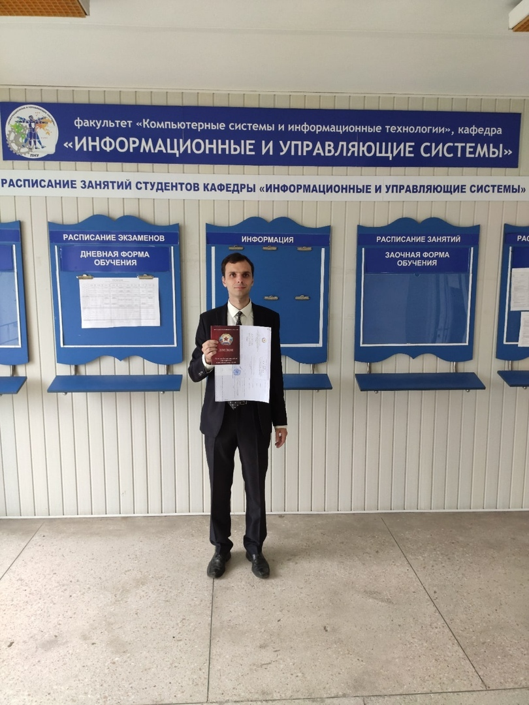

Багдасарьян Михаил Владиславович
Преподаватель колледжа ЛГУ им. Владимира Даля, методическая комиссия «Программирования и компьютерных дисциплин».
Магистр "Информационные системы и технологии".
Переподаваемые дисциплины
- Теория алгоритмов
- Компьютерные сети
- Разработка, внедрение и адаптация программного обеспечения отраслевой направленности
- Операционные системы и среды
- Системное программирование
Электронная почта
m.v.bagdasaryan-dahlcollege@yandex.ruСоциальные сети

1 неделя (19-24 Октября)
1П-19 Теория алгоритмов
Лекция 1. Решение задач по построению циклических алгоритмов.https://yadi.sk/i/BWLrGqBUy11eww
2П-19 Теория алгоритмов
Лекция 1. Решение задач по построению циклических алгоритмов.https://yadi.sk/i/BWLrGqBUy11eww
Лекция 2. Работа с циклическими алгоритмами.
https://yadi.sk/i/jsskCKlJepOAIQ
1К-19 Компьютерные сети
Лекция 1. Понятие и назначение маски подсети.https://yadi.sk/i/bPt3e7xsYI4VKg
Видео:
https://youtu.be/Uj1XQgRXYOc
1ПИ-18 Разработка, внедрение и адаптация программного обеспечения отраслевой направленности
Лабораторная работа. Стилевое оформление HTML документа. Создание Web-страниц с применением свойств для фона страницы, списков, применение рамок для обрамления.https://yadi.sk/i/weKNIadMjjezdw
Лабораторная работа. Создание html-старницы с вложенной CSS по методу табличной верстки.
https://yadi.sk/i/rqUZK3A8vk6MXw
1ПИ-18 Операционные системы и среды
Лабораторная работа № 11 Аудит ресурсов и событий.https://yadi.sk/i/9tSJtqfYc1rIgA
Лабораторная работа № 12 Внутренняя политика безопасности Windows.
https://yadi.sk/i/iaNjxVpqWYPz5w
1П-18 Системное программирование
Лабораторная работа №3. Операторы структурного программирования.https://yadi.sk/i/TOwAJX6gJE_XLw
Лекция №1 Основные типы операндов.
https://yadi.sk/i/-_Bna_aKY7virQ
Лекция №2 Библиотека import java.util.scanner и методы её использования
https://yadi.sk/i/kjqC8sswuIdFMA
2П-18 Системное программирование
Лекция №3 Типы данных в Java.https://yadi.sk/i/JqP07RVx3obsSQ
Лабораторная работа №3. Операторы структурного программирования.
https://yadi.sk/i/TOwAJX6gJE_XLw
2 неделя (26-31 Октября)
1П-19 Теория алгоритмов
Лекция 3. Реализация элементов блок-схемы алгоритма на языке Pascal.https://yadi.sk/i/aODmhpKWUmvyUw
Лекция 4. Работа со вспомогательными алгоритмами (подпрограммами).
https://yadi.sk/i/funOLVZniCp49w
2П-19 Теория алгоритмов
Лекция 1. Решение задач по построению циклических алгоритмов.https://yadi.sk/i/BWLrGqBUy11eww
1К-19 Компьютерные сети
Лабораторная работа Изучение IP-адресации сети и маски подсети.https://yadi.sk/i/0BwkjNckj9oKxA
1ПИ-18 Разработка, внедрение и адаптация программного обеспечения отраслевой направленности
Лекция 1 Позиционирование с помощью CSS. Размещение блочных элементов HTML-разметки в рабочей области браузера с точностью до пикселя.https://yadi.sk/i/w2yWLXNrO-VZdg
Лабораторная работа. Создание html-старницы с вложенной CSS по методу блочной верстки страниц.
https://yadi.sk/i/l_PkByTOw-5VlA
Лекция 2 Адаптация интерфейса. Фильтры.
https://yadi.sk/i/E6fFRotgP_g3Hg
Лекция 3 Слои: Абсолютное позиционирование. Горизонтальное позиционирование. Вертикальное позиционирование.
https://yadi.sk/i/2DQnmVHz1qtcSA
1ПИ-18 Операционные системы и среды
Лабораторная работа № 13 Консоль MMC. Редактор локальной групповой политики. Оснастка Локальная политика безопасности.https://yadi.sk/i/Yejn3LtzNptRWA
1П-18 Системное программирование
Лабораторная работа №4. Основы работы с массивами.https://yadi.sk/i/lrvrIkocRDhfDA
Лекция 4 Команда логического сравнения. Переходы по условию.
https://yadi.sk/i/J_ehL9Yml6Ltog
2П-18 Системное программирование
Лекция 1 Основные типы операндовhttps://yadi.sk/i/-_Bna_aKY7virQ
Лекция 2 Библиотека import java.util.scanner и методы её использования.
https://yadi.sk/i/kjqC8sswuIdFMA
Лабораторная работа №4 Лабораторная работа №4. Основы работы с массивами.
https://yadi.sk/i/lrvrIkocRDhfDA
3 неделя (2-7 ноября)
1П-19 Теория алгоритмов
Лекция 5 Решение задач по построению вспомогательных алгоритмов.https://yadi.sk/i/35FSIi0y8UvTQw
2П-19 Теория алгоритмов
Лекция 3 Реализация элементов блок-схемы алгоритма на языке Pascal.https://yadi.sk/i/aODmhpKWUmvyUw
Лекция 4 Работа со вспомогательными алгоритмами (подпрограммами).
https://yadi.sk/i/funOLVZniCp49w
1К-19 Компьютерные сети
Лекция 2 Протокол ICMP и команда ping.https://yadi.sk/i/j7hV35o25p_8Og
Видео:
https://youtu.be/9iG6ECpF-ko
1ПИ-18 Разработка, внедрение и адаптация программного обеспечения отраслевой направленности
Лекция 4 Таблицы в CSS. Слои и прозрачность таблицы. Вертикальное и горизонтальное выравнивание. Динамические эффекты строк и столбцов. Стили границ.https://yadi.sk/i/EvCvKuWIrNotng
Лабораторная работа. Web-страница с горизонтально и вертикально ориентированным блоком навигации.
https://yadi.sk/i/aspMI-kDnkLYoA
Лекция 5 Введение в язык программирования JavaScript. Основы JavaScript. Лексическая структура.
https://learn.javascript.ru/intro
1ПИ-18 Операционные системы и среды
Лабораторная работа № 13. Консоль MMC. Редактор локальной групповой политики. Оснастка Локальная политика безопасности. Продолжение.https://yadi.sk/i/Yejn3LtzNptRWA
Лекция 1 Назначение, структура, методы редактирования реестра. Резервное копирование и восстановление реестра.
https://yadi.sk/i/6TUS5FTwzcmr9w
1П-18 Системное программирование
Лабораторная работа №5. Работа с одномерными, многомерными и несимметричными массивами.https://yadi.sk/i/3nduR6SA1IcVtw
Лекция 5 Основы работы с массивами. Работа с одномерными, многомерными и несимметричными массивами.
https://javarush.ru/groups/posts/mnogomernye-massivy
Лабораторная работа №6. Работа со строками в Java.
https://yadi.sk/i/hAzsAa7KmwslCg
2П-18 Системное программирование
Лекция 4 Команда логического сравнения. Переходы по условию.https://yadi.sk/i/J_ehL9Yml6Ltog
Лабораторная работа №5. Работа с одномерными, многомерными и несимметричными массивами.
https://yadi.sk/i/3nduR6SA1IcVtw
4 неделя (9-14 ноября)
1П-19 Теория алгоритмов
Лекция 6 Работа с алгоритмами обработки массивов. Алгоритмы сортировки.https://yadi.sk/i/0BRLgcPe5euh3w
Лекция 7 Применение оператора выбора Case.
https://yadi.sk/i/969wvcfVx8DDng
2П-19 Теория алгоритмов
Лекция 5 Решение задач по построению вспомогательных алгоритмов.https://yadi.sk/i/35FSIi0y8UvTQw
1К-19 Компьютерные сети
Лекция 3 Понятие VLAN. Реализации локальных сетей с применением VLAN.https://yadi.sk/i/ZbV-sdbYFY6pnw
Видео:
2. https://youtu.be/Ig4WoXWzhNc
1ПИ-18 Разработка, внедрение и адаптация программного обеспечения отраслевой направленности
Лекция 6 Типы данных. Выражения и операторы. Операторы сравнения и логические значения.1. https://learn.javascript.ru/types
2. https://learn.javascript.ru/operators
3. https://learn.javascript.ru/comparison
Лекция 7 Встраивание js-кода в html-документ. Пишем первый скрипт
https://javascript.ru/tutorial/foundation/start
Лабораторная работа. Создание простых сценариев JavaScript. Вставка сценариев в HTML – документ.
https://yadi.sk/i/qbLbv2GezzHy3w
Лекция 8 Ввод/вывод информации с помощью JavaScript: окна вывода сообщений, окно подтверждения в браузере, окно запросов.
https://learn.javascript.ru/alert-prompt-confirm
1ПИ-18 Операционные системы и среды
Лабораторная работа № 14. Распределение прав пользователя.https://yadi.sk/d/uzS-qS2W21aXWQ
1П-18 Системное программирование
Лекция 6 Основные функции для работы со строками в Java.https://yadi.sk/i/EXCvvdr1ciKDNw
Лекция 7 Управление строками.
https://yadi.sk/i/EXCvvdr1ciKDNw
2П-18 Системное программирование
Лекция 5 Основы работы с массивами. Работа с одномерными, многомерными и несимметричными массивами.https://javarush.ru/groups/posts/mnogomernye-massivy
Лабораторная работа №6. Работа со строками в Java.
https://yadi.sk/i/hAzsAa7KmwslCg
Лекция 7 Управление строками.
https://yadi.sk/i/EXCvvdr1ciKDNw
5 неделя (16-21 ноября)
1П-19 Теория алгоритмов
Лекция 8. Описание схем в ЕСПД. ГОСТ для построения блок-схем алгоритмов.https://yadi.sk/i/bpTrDJZ02EPV0g
2П-19 Теория алгоритмов
Лекция 6 Работа с алгоритмами обработки массивов. Алгоритмы сортировки.https://yadi.sk/i/0BRLgcPe5euh3w
Лекция 7 Применение оператора выбора Case.
https://yadi.sk/i/969wvcfVx8DDng
1К-19 Компьютерные сети
Лекция 4. Система доменных имён DNS. Протоколы HTTP и FTP.https://yadi.sk/i/bfRYjyw9kSQmAw
Видео:
1. https://youtu.be/B0J0c0KLtbQ
2. https://youtu.be/yAlm-jTneeY
3. https://youtu.be/mvMYV0Hfig4
4. https://youtu.be/RlccXUx4LVw
5. https://youtu.be/Uji0sQ-Co7Q
1ПИ-18 Разработка, внедрение и адаптация программного обеспечения отраслевой направленности
Лабораторная работа. Ввод и вывод данных. JavaScript функции для работы с типами данныхhttps://yadi.sk/i/Ez8Kyhh0bAy9XA
Лабораторная работа. Организация решения выражений с помощью специального объекта «Math» в JavaScript.
https://yadi.sk/i/y-Qeb375hgvFxQ
Лекция 9 Инструкция ветвления. Инструкции цикла. Инструкции continue, break.
1. https://learn.javascript.ru/ifelse
2. https://learn.javascript.ru/while-for
3. https://learn.javascript.ru/switch
1ПИ-18 Операционные системы и среды
Лабораторная работа № 15. Параметры безопасности и политика обновления.https://yadi.sk/i/AxfrA4H_Eap32w
Лабораторная работа № 16. Настройка пользовательского интерфейса в ОС Windows. Построение защищенной файловой системы.
https://yadi.sk/i/6T3fuTB4AOQWyA
1П-18 Системное программирование
Лекция 8 Основы обработки исключений в Java.https://yadi.sk/i/biKFAcxuAW99Ng
Лекция 9 Обработка исключений в Java.
https://yadi.sk/i/IN8VtXiI3zXMVg
Лабораторная работа №7. Управление строками. Основные функции для работы со строками в Java.
https://yadi.sk/i/iEgIM8aVjGTsbQ
2П-18 Системное программирование
Лекция 6 Основные функции для работы со строками в Java.https://yadi.sk/i/xf9GlZRKhgMUNA
Лекция 8 Основы обработки исключений в Java.
https://yadi.sk/i/biKFAcxuAW99Ng
6 неделя (23-28 ноября)
1П-19 Теория алгоритмов
Лекция 9. Средства построения блок-схем алгоритмов.https://yadi.sk/i/OxEzioF9xDlaYw
Лекция 10. Современное ПО для построения блок-схем алгоритмов.
https://yadi.sk/i/Jd8Tf5sbBBcdvg
2П-19 Теория алгоритмов
Лекция 8. Описание схем в ЕСПД. ГОСТ для построения блок-схем алгоритмов.https://yadi.sk/i/bpTrDJZ02EPV0g
1К-19 Компьютерные сети
Лекция 5 Службы сети интернет - WWW, e mail. Браузеры. Поисковые системы.https://yadi.sk/i/iOvA2O1vbMHuIQ
1ПИ-18 Разработка, внедрение и адаптация программного обеспечения отраслевой направленности
Лабораторная работа. Применение условных операторов языка JavaScript.https://yadi.sk/i/QFZ4bEl7O42Agg
Лабораторная работа. Применение циклических операторов языка JavaScript.
https://yadi.sk/i/vfrBOcjfy3CrQA
Лекция 10. Инструкция перехвата и обработки исключения (try/catch/finally, тип данных Error)
1. https://learn.javascript.ru/exception
2. https://learn.javascript.ru/try-catch
Лабораторная работа. Обработка исключений
https://yadi.sk/i/eWwKQTGM-7KqtQ
1ПИ-18 Операционные системы и среды
Лекция 2. Назначение и характеристики архиваторов. Принципы работы с архиваторами.https://yadi.sk/i/zIC1FhBbkhsEzw
1П-18 Системное программирование
Лекция 10. Обработка исключений нескольких типов.https://yadi.sk/i/IN8VtXiI3zXMVg
Лабораторная работа №8. Обработка исключений Java.
https://yadi.sk/i/chjcrajuTZ38yA
2П-18 Системное программирование
Лекция 9. Обработка исключений в Java.https://yadi.sk/i/IN8VtXiI3zXMVg
Лабораторная работа №7. Управление строками. Основные функции для работы со строками в Java.
https://yadi.sk/i/iEgIM8aVjGTsbQ
Лекция 10. Обработка исключений нескольких типов.
https://yadi.sk/i/6tEUVfFvz88REA
7 неделя (30 ноября - 5 декабря)
1П-19 Теория алгоритмов
Лекция 11. Построение блок-схем алгоритмов средствами MS Visiohttps://yadi.sk/i/V8HAzOfGQJ0iKA
2П-19 Теория алгоритмов
Лекция 9. Средства построения блок-схем алгоритмов.https://yadi.sk/i/OxEzioF9xDlaYw
Лекция 10. Современное ПО для построения блок-схем алгоритмов.
https://yadi.sk/i/Jd8Tf5sbBBcdvg
1К-19 Компьютерные сети
Лекция 6. Электронная коммерция. Интернет-магазины. Системы платежей в Интернете.https://yadi.sk/i/1QK4eiayY1pyew
1ПИ-18 Разработка, внедрение и адаптация программного обеспечения отраслевой направленности
Лекция 11. Функции JavaScript. Определение и вызов функций.https://learn.javascript.ru/function-basics
Лекция 12. Введение в браузерные события.
https://learn.javascript.ru/introduction-browser-events/a>
Лабораторная работа. Работа с функциями в JavaScript.
https://yadi.sk/i/tcoTfJp3usqPgw
1ПИ-18 Операционные системы и среды
Лабораторная работа № 18. Управление учетными записями и группами пользователей.https://yadi.sk/i/ZC2RyeUIVrwDrw
Лекция 3 Базовые технологии безопасности. Шифрование. Односторонние функции шифрования. Аутентификация, авторизация, аудит. Пароли. Технология защищенного канала.
https://yadi.sk/i/zH5P9L7HXvH4yg
1П-18 Системное программирование
Лекция 10. ООП, классы, объекты в Java.https://yadi.sk/i/-fdPoW_eETb_Vw
Лабораторная работа №9. Обработка исключений нескольких типов, возникающих в приложениях Java.
https://yadi.sk/i/LkJLHENH4xEKgw
Лекция 11. Методы в Java.
https://yadi.sk/i/yrhaZFe4wcoVpA
2П-18 Системное программирование
Лабораторная работа №8. Обработка исключений Java.https://yadi.sk/i/chjcrajuTZ38yA
Лекция 10. ООП, классы, объекты в Java.
https://yadi.sk/i/-fdPoW_eETb_Vw
8 неделя (7-12 декабря)
1П-19 Теория алгоритмов
Лабораторная работа № 2. Построение блок-схем алгоритмов средствами MS Visio.https://yadi.sk/i/Y681IYNCsfye0A
Лабораторная работа № 3. Построение блок-схем алгоритмов средствами MS Visio.
https://yadi.sk/i/WXB5eSAActZ3Og
2П-19 Теория алгоритмов
Лабораторная работа № 1. Построение блок-схем алгоритмов средствами MS Visio.https://yadi.sk/i/oqiD-sEGkOxrHw
1К-19 Компьютерные сети
Лекция 7 Классификация угроз информации в компьютерных сетях.https://yadi.sk/i/RmFV1-LIeWnSww
1ПИ-18 Разработка, внедрение и адаптация программного обеспечения отраслевой направленности
Лекция 13. Массивы JavaScript. Создание массива. Операции с массивом.https://learn.javascript.ru/array
1ПИ-18 Операционные системы и среды
Лабораторная работа № 19. Установка операционной системы Linux.https://yadi.sk/i/Bi83vP21sotYRQ
1П-18 Системное программирование
Лабораторная работа №10. ООП, классы, объекты в Java.https://yadi.sk/i/z1vESSZyzXGklw
Лабораторная работа №11. Методы, конструкторы в Java.
https://yadi.sk/i/z1vESSZyzXGklw
2П-18 Системное программирование
Лабораторная работа №9. Обработка исключений нескольких типов, возникающих в приложениях Java.https://yadi.sk/i/LkJLHENH4xEKgw
Лекция 11. Методы в Java.
https://yadi.sk/i/yrhaZFe4wcoVpA
Лабораторная работа №10. ООП, классы, объекты в Java.
https://yadi.sk/i/z1vESSZyzXGklw
9 неделя (14-19 декабря)
1ПИ-18 Разработка, внедрение и адаптация программного обеспечения отраслевой направленности
Лабораторная работа. Обработка и представление датhttps://yadi.sk/i/GueIvsG6TSiRUA
1П-18 Системное программирование
Лекция 12. Конструкторы в Java.https://yadi.sk/i/mYR-CQzjd_E1UA
Лекция 13. Наследование в Java.
https://yadi.sk/i/X7NGOo0AtijXuQ
Лекция 14. Потоки в Java
https://yadi.sk/i/coxGVmtuws124g
2П-18 Системное программирование
Лекция 12. Конструкторы в Java.https://yadi.sk/i/mYR-CQzjd_E1UA
Лабораторная работа №11. Методы, конструкторы в Java.
https://yadi.sk/i/cXSaOq4D7YSWkA